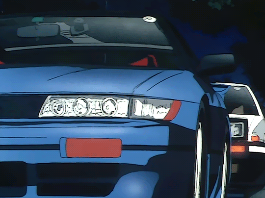

Hello, I'm Erick Cordon
I'm a Software Engineering student at the New England Institue of Techology
Who's Erick Cordon?
My name is Erick J Cordon and I am currently 22 years old. I am currently a Software Engineering student at New England Technical Institue of Technology. Since highschool I've had a little niche for coding and started learning some small code through code academy and FreeCodeCamp. I am hoping to become a front-end developer once I graduate.
A little about me is I am an avid car enthusiast, I've been into cars since I was a young kid and currently hope to one day build one of my dream cars (an E36 BMW M3 🏎️ or a Type R Civic). I'm also very into music Im super open minded to new music but my current favorite artist is MF DOOM with my favorite song being either "Rapp Snitch Kinishes" or "DOOMSDAY". I also do some sim-racing on my free time in hopes to one day participate in time-attack racing.
Schooling

- Cranston High School East
- New England Technical Institue of Technology
- Automotive with High Performace | Gpa: 3.4
- New England Technical Institue of Technology
- Software Engineering & Web Development | GPA: 3.5
Interests
- Taco Bell Dog
- Cars
- Music